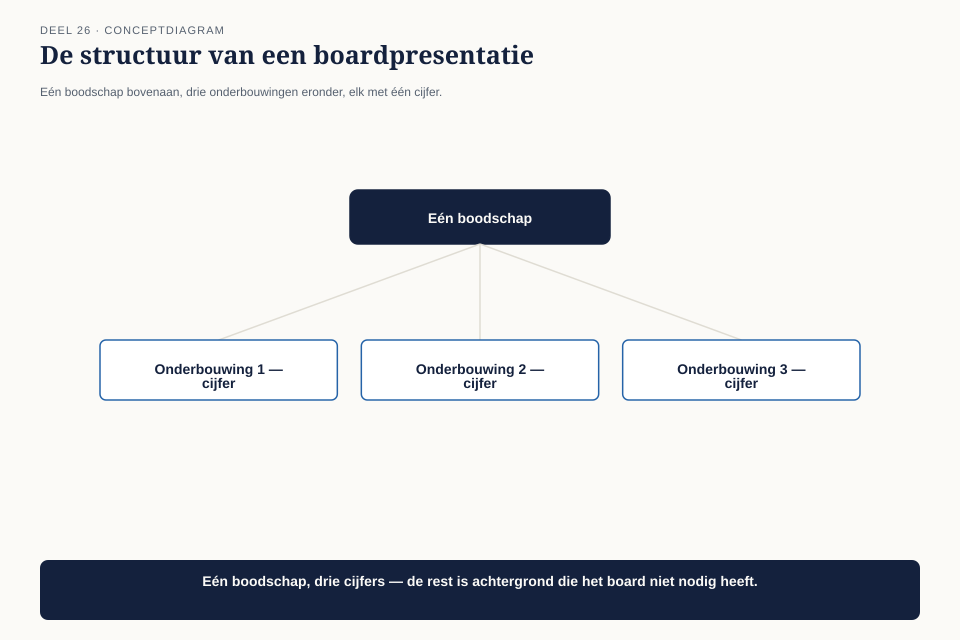
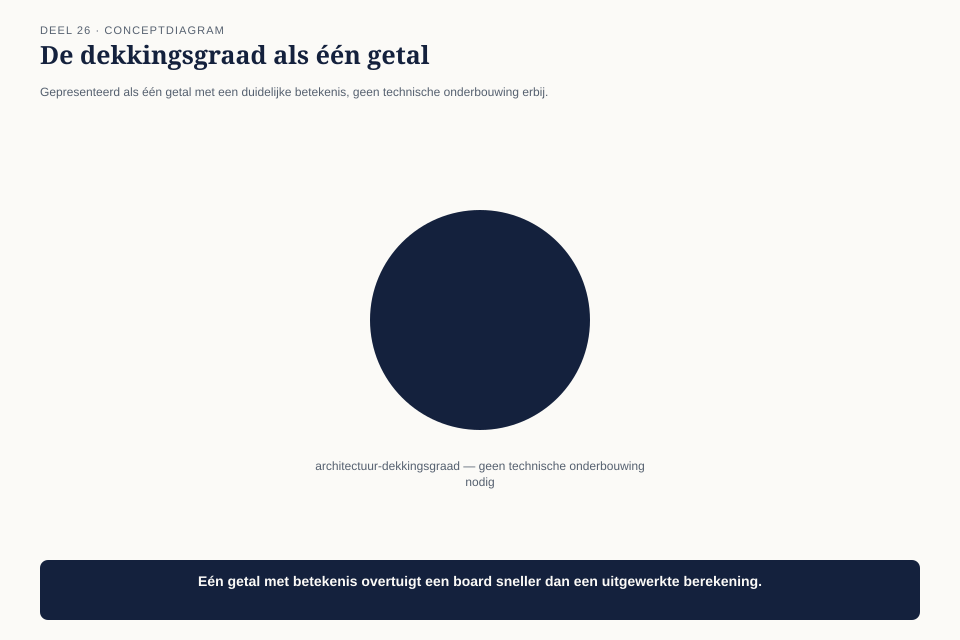

Deel 26 — Board-communicatie
Slidedeck · Ductus-cursus BTABoK · Niveau 3 · deel 26 van 30 · 22 slides
Slide 1 — Titel: Board-communicatie
Deel 26
Ductus
Slide 2 — Agenda: Vandaag
- De eerste kwartaalrapportage aan de raad van bestuur
- Eén boodschap, drie onderbouwingen
- Risico communiceren zonder techniek
- De onderliggende zorg beantwoorden
Slide 3 — Sectie: 1. De eerste kwartaalrapportage
Slide 4 — Figuur: 40 slides, 10 minuten

Slide 5 — Citaat: Als je bij slide vijf nog niet klaar bent met de kernboodschap, ben je de raad a
Als je bij slide vijf nog niet klaar bent met de kernboodschap, ben je de raad al kwijt.
— Bart Hoekstra
Slide 6 — Sectie: 2. Eén boodschap, drie onderbouwingen
Slide 7 — Figuur: De structuur

Slide 8 — Tabel: Tien minuten
| Onderdeel | Tijd |
|---|---|
| Boodschap | 1 min |
| Voortgang | 2-3 min |
| Risico | 2-3 min |
| Wat de raad moet weten | 2-3 min |
Slide 9 — Statement: De omgekeerde piramide van deel 5
Nu onder nog hogere druk
Slide 10 — Opdracht: Opdracht 1 — De boardpresentatie in vijf slides
25 minuten, individueel
Eén boodschap · drie onderbouwingen · elk één cijfer
Slide 11 — Sectie: 3. Risico zonder techniek
Slide 12 — Figuur: De dekkingsgraad, één getal

Slide 13 — Citaat: 32% nog niet expliciet afgedekt. Vergelijkbaar met een dekkingsgraad onder de st
32% nog niet expliciet afgedekt. Vergelijkbaar met een dekkingsgraad onder de streefwaarde — een signaal om nu bij te sturen, geen reden tot paniek.
Slide 14 — Statement: Het getal eerst
De betekenis in gewone taal. De techniek pas op verzoek.
Slide 15 — Opdracht: Opdracht 2 — Risico zonder techniek
15 minuten, tweetallen
Herschrijf een technische risicobeschrijving
Slide 16 — Sectie: 4. De onderliggende zorg
Slide 17 — Citaat: Kan het niet gewoon fout gaan met de berekening, zoals bij Mutatieplatform desti
Kan het niet gewoon fout gaan met de berekening, zoals bij Mutatieplatform destijds?
— een bestuurslid
Slide 18 — Bullets: Twee reacties
- Fout: de technische onnauwkeurigheid corrigeren
- Goed: de terechte zorg erkennen, uitleggen wat er is geleerd
Slide 19 — Opdracht: Opdracht 3 — De onderliggende zorg beantwoorden
20 minuten, individueel
Vier vragen
Slide 20 — Opdracht: Opdracht 4 — Rollenspel: de vragenronde
20 minuten, groepen van 3
Presenteren · twee onnauwkeurige, oprechte vragen
Slide 21 — Bullets: De uitkomst
- Presentatie: 8 minuten
- Eén vraag beantwoord met de onderliggende zorg
- De raad maakt budget vrij om de dekkingsgraad te verhogen
Slide 22 — Titel: Volgende keer
Deel 27 — Strategische breedte
Wtp als meerdere parallelle werkstromen — samenhang op portefeuilleniveau.